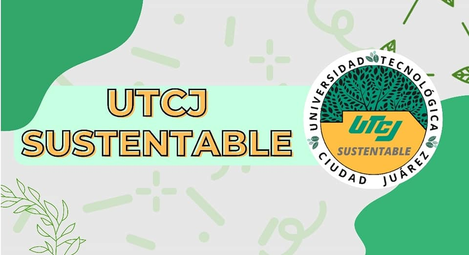

La Universidad Tecnológica de Ciudad Juárez tiene como propósito incrementar la educación y concientización ambiental.
En tres proyectos centrales enfocados en la sustentabilidad.
Que exista un compromiso con el medio ambiente, la comunidad universitaria y la sociedad.
Universidad Tecnologica De Ciudad Juárez2022, Todos Somos Bravos.